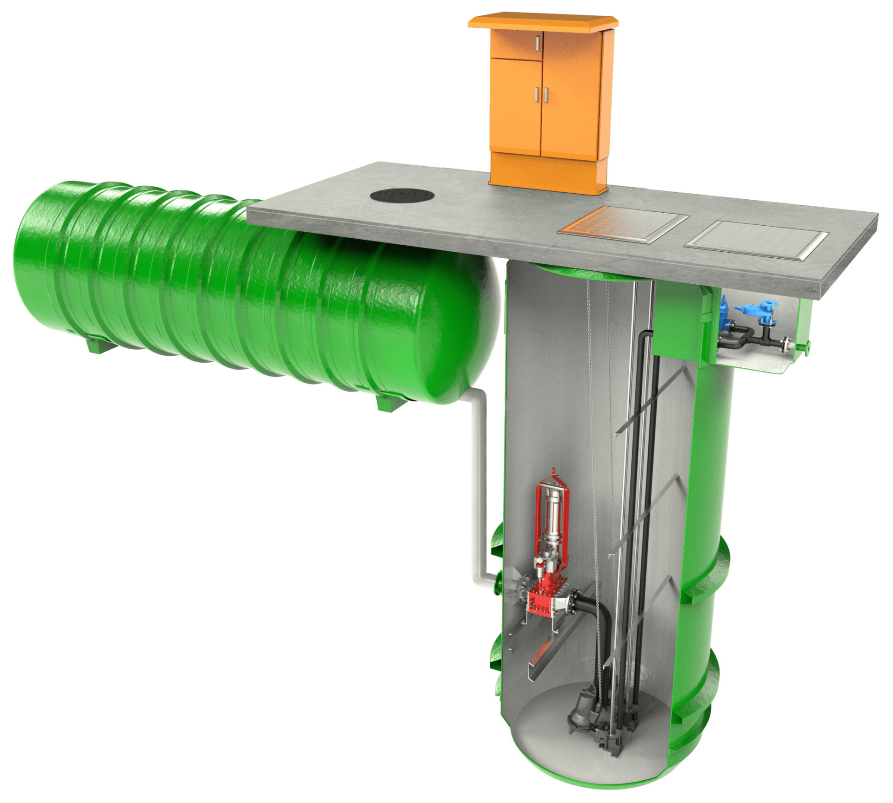

Pump Stations
FRP Horizontal/Vertical
CONFIGURATION Vertical pump station with integrated dry valve chamber, horizontal emergency storage tank (shown with internal macerator also) FEATURES & BENEFITS Very large volumes of storage available Separate tanks means bigger volumes With or without the dry valve chamber…
Product details
Specifications
| Model | FRP Horizontal/Vertical |
|---|---|
| Range | Pump Stations |
What is supplied
Construction
CONFIGURATION
Vertical pump station with integrated dry valve chamber, horizontal emergency storage tank (shown with internal macerator also)- Very large volumes of storage available
- Separate tanks means bigger volumes
- With or without the dry valve chamber
- Fully engineered one piece construction – no assembly on site
- Small footprint required – saves space
- Comparatively light weight – requires light crane
- Diameters up to 4,000mm (subject to delivery arrangements)
- Standard depths to 5,000mm, greater on request (subject to delivery arrangements)
- Inlet can be installed by plumber
- All penetrations can be cast in as per customer specifications
- Single, dual or triplex pump configurations
- Free-standing or guide rail mounted pump systems
Range applications
Applications
- Mining Operations
- Car Washes
- Restaurants
- Water Transfer
- Industrial Processes
- Emergency Water Supply
These are common applications for the Pump Stations range. Confirm product suitability with Aline Pumps for your project.
Technical information
Downloads
FRP Horizontal/Vertical Product brochure
View the product document.
Talk to our team
Need help specifying FRP Horizontal/Vertical?
Send your application requirements to Aline Pumps or call 1800 018 999.